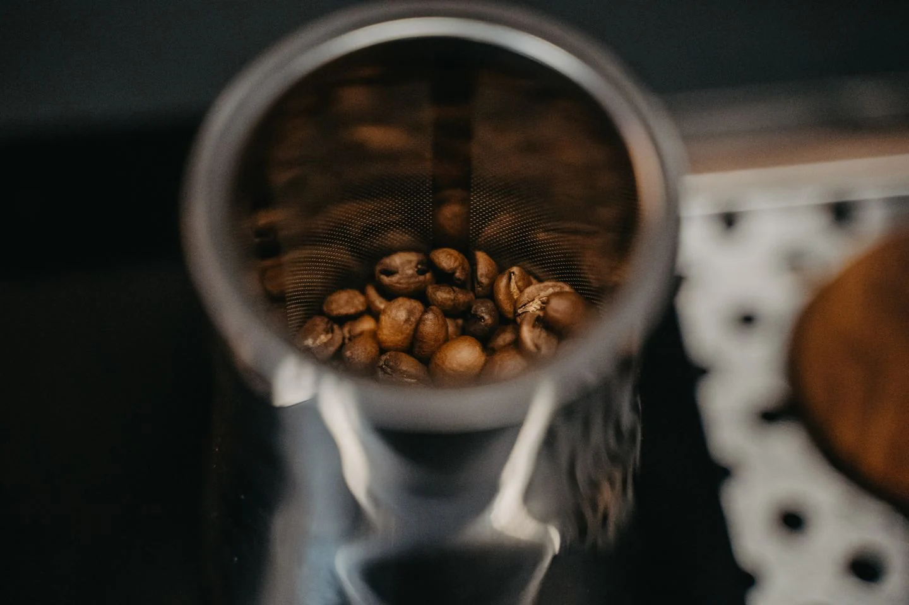

НАШ ПОДХОДОбжариваем
Обжариваем
не цвет,
а вкус.
Каждый лот проходит серию пробных обжарок. Мы ищем профиль, который подчёркивает терруар и делает чашку чистой, сладкой и узнаваемой.
48hот обжарки
до отправки86+оценка каждого
лота по SCA
до отправки86+оценка каждого
лота по SCA